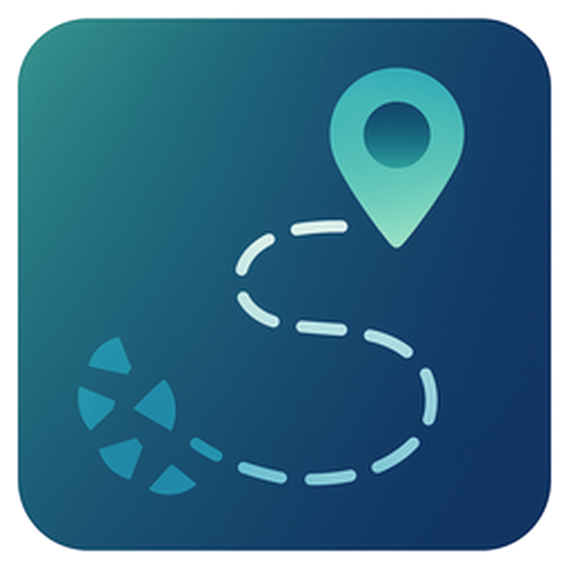
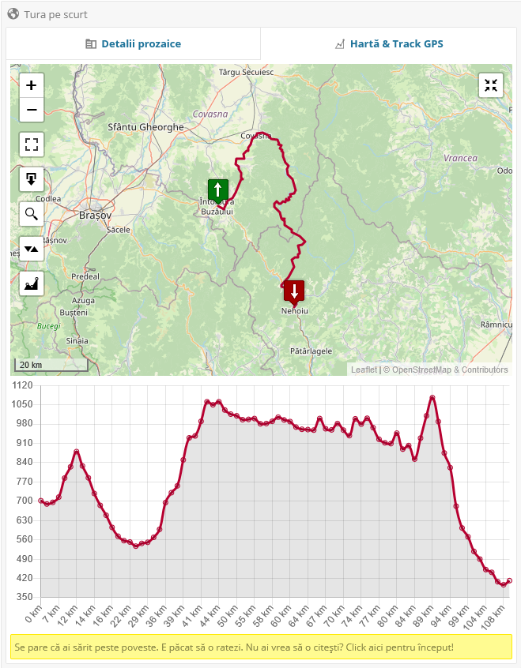

WP Trip SummaryDIN JURNALUL TĂU DE CĂLĂTORIE
Turele tale, pe blogul tău.

ADAUGĂ TRASEUL
GPX · GeoJSON · KML
Încarcă un fișier GPS
HARTĂ ȘI PROFIL DE ALTITUDINE
DETALIILE CARE CONTEAZĂ
Povești cu traseu.
wordpress.org/plugins/wp-trip-summary